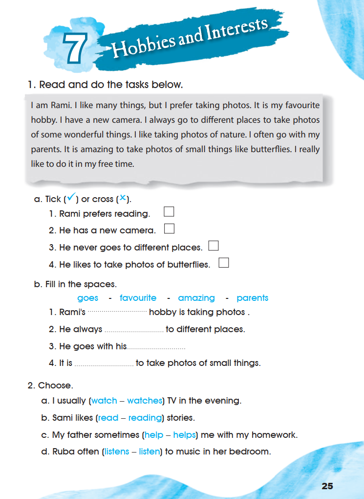
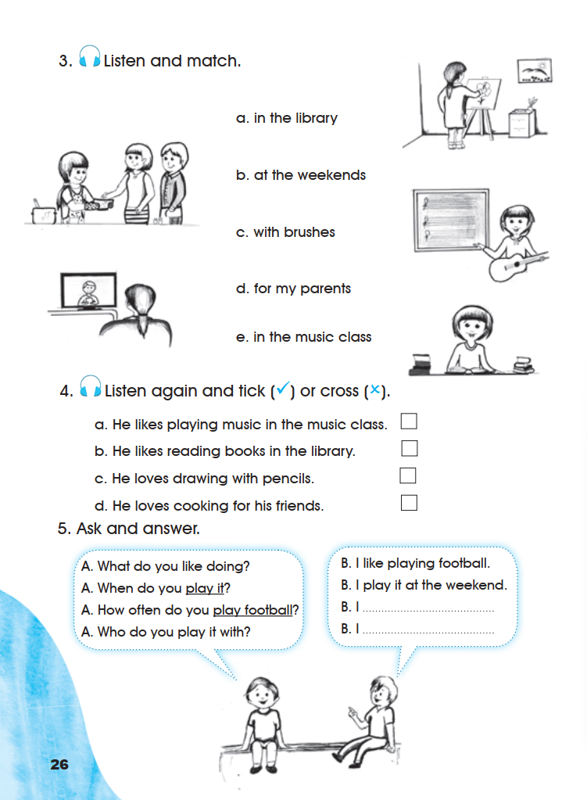
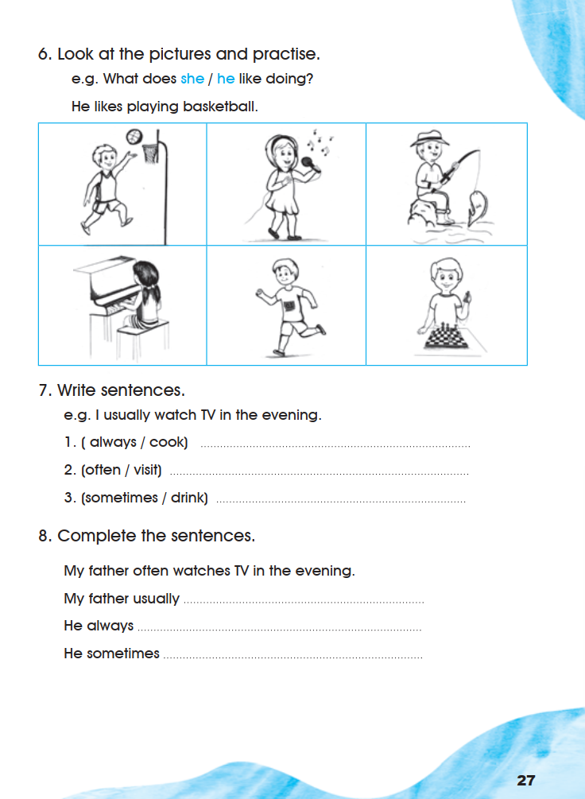

Workbook · Hobbies and Interests
Every printed exercise is shown beside its original byte-preserved scan and an accessible transcription. No audio was supplied, so listening tasks stay unavailable for verification; inferred and illustrative answers are labelled.
Workbook page 25 · Rami passage, comprehension and grammar choice

Accessible transcription
7 Hobbies and Interests 1 Read and do the tasks below. I am Rami. I like many things, but I prefer taking photos. It is my favourite hobby. I have a new camera. I always go to different places to take photos of some wonderful things. I like taking photos of nature. I often go with my parents. It is amazing to take photos of small things like butterflies. I really like to do it in my free time. a. Tick (✓) or cross (×). 1. Rami prefers reading. 2. He has a new camera. 3. He never goes to different places. 4. He likes to take photos of butterflies. b. Fill in the spaces. goes - favourite - amazing - parents 1. Rami’s ............... hobby is taking photos. 2. He always ............... to different places. 3. He goes with his ............... 4. It is ............... to take photos of small things. 2 Choose. a. I usually (watch – watches) TV in the evening. b. Sami likes (read – reading) stories. c. My father sometimes (help – helps) me with my homework. d. Ruba often (listens – listen) to music in her bedroom. 25
Source-faithful study notes
Source-derived, not printed key: 1a = ×, ✓, ×, ✓; 1b = favourite, goes, parents, amazing; exercise 2 = watch, reading, helps, listens.
Exercise 1b · Fill in the spaces
Inferred from the printed word bank and passage; comparison only, no score.
Show inferred word bank answers
Workbook page 26 · listening tasks and personal pair work

Accessible transcription
3 Listen and match. a. in the library b. at the weekends c. with brushes d. for my parents e. in the music class Illustrations: girl painting with an easel; children with an adult; child watching a screen; girl with a guitar and music notes; girl at a desk with books. 4 Listen again and tick (✓) or cross (×). a. He likes playing music in the music class. b. He likes reading books in the library. c. He loves drawing with pencils. d. He loves cooking for his friends. 5 Ask and answer. A: What do you like doing? A: When do you play it? A: How often do you play football? A: Who do you play it with? B: I like playing football. B: I play it at the weekend. B: I ................................ B: I ................................ 26
Source-faithful study notes
Audio-dependent: exercises 3 and 4 have no verification and no model. Open writing/speaking: exercise 5 has two personal response lines.
Exercise 5 · Personal answers
Open/personal: illustrative examples only; answers vary.
Show illustrative examples (not official answers)
Workbook page 27 · picture practice and sentence writing

Accessible transcription
6 Look at the pictures and practise. e.g. What does she / he like doing? He likes playing basketball. Pictures: basketball, singing, fishing, piano, running, chess. 7 Write sentences. e.g. I usually watch TV in the evening. 1. (always / cook) ................................ 2. (often / visit) ................................ 3. (sometimes / drink) ................................ 8 Complete the sentences. My father often watches TV in the evening. My father usually ................................ He always ................................ He sometimes ................................ 27
Source-faithful study notes
Exercise 6 · Picture-based answers
Image-derived inference; not an official printed key.
Show inferred picture answers
Exercise 7 · Prompt-based sentences
Open/personal: illustrative examples only; answers vary.
Show illustrative examples (not official answers)
Exercise 8 · Complete three stems
Open/personal: illustrative examples only; answers vary.